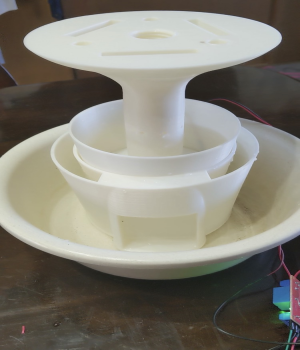
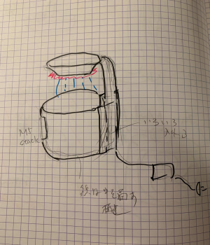
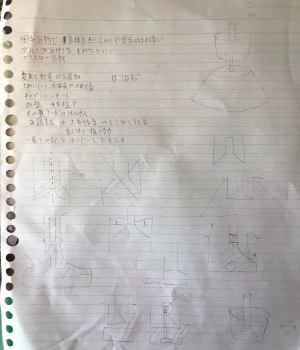
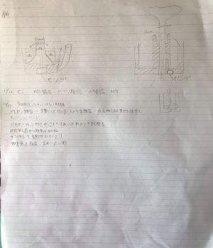

渡邉君と相談しつつ全体の大きさやねじの部分などを改良し、組み立てて全体像を確認しました。
全体としては水やり機能も作動し、フォルムもよいのではないかと思っている。ワンピースのウォーターセブンみたい
しかし、配線問題はいまだに解決していない。水タンクの下に配線スペースを作ろうとしたが、水が漏れて配線が水浸しになる可能性やどうポンプまで配線を繋ぐか、電源につながる穴はどこにあけるか、Ｍ5stackからどうやって配線スペースに配線を送るかなど次々と問題が出てくる。
先生に相談したところ、渡邉君の前回の案と俺の中間をとれば良いのでは？という案をいただいた。今まで作ってきた形とはだいぶ異なってしまうが細かい機能などは今までの案が使えそう。渡邉君と相談しながら決めていきたい。
何の参考になるかわからないし、見えにくいけどなんとなくここまでの軌跡として2つ画像を張っておく。
 